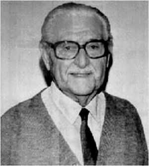
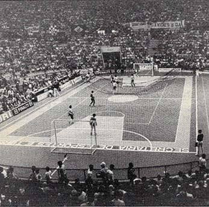

📅
AÑO DE CREACIÓN
1930
Un deporte que nació en Sudamérica, creció en todo el mundo y hoy une a millones de personas mediante el fútbol sala.

Juan Carlos Ceriani fue un profesor argentino de educación física que creó el fútbol de salón en 1930, en Montevideo, Uruguay, mientras trabajaba en la Asociación Cristiana de Jóvenes.
Buscaba una forma de jugar al fútbol en espacios cubiertos, como gimnasios, utilizando equipos pequeños y adaptando las reglas a una cancha más reducida.
1930
Montevideo, Uruguay
Jugar al fútbol en espacios reducidos
En 1930, Juan Carlos Ceriani desarrolló el fútbol de salón en Uruguay. Adaptó elementos de distintos deportes para organizar un juego que pudiera practicarse dentro de un gimnasio.
El espacio era más pequeño que una cancha de fútbol y los equipos tenían menos jugadores. Esto hizo que los pases rápidos, el control del balón y la coordinación fueran muy importantes.
Con el tiempo, el deporte se extendió a otros países de Sudamérica y luego llegó a diferentes partes del mundo. Surgieron organizaciones y competiciones que ayudaron a impulsar su crecimiento.
Actualmente, el futsal se practica en escuelas, clubes y competiciones internacionales.

Juan Carlos Ceriani desarrolla esta modalidad en Montevideo, Uruguay.
El deporte gana popularidad y comienza a practicarse en más países y organizaciones.
Se celebra en los Países Bajos la primera Copa Mundial de Futsal organizada por la FIFA.
El futsal continúa creciendo y se practica en numerosos países.
Enseña a colaborar, comunicarse y apoyar a los compañeros durante el partido.
Ayuda a desarrollar el control del balón, la coordinación y la toma rápida de decisiones.
Fomenta la actividad física, la disciplina, el respeto y la convivencia.